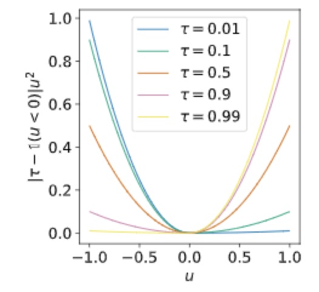
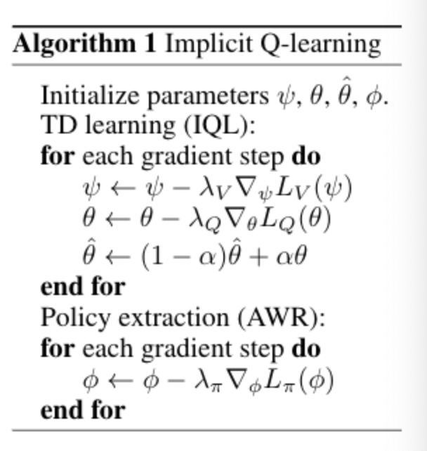

[TOC]
- Title: Offline Reinforcement Learning with Implicit Q-learning
- Author:Ilya Kostrikov et. al.
- Publish Year: 2021
- Review Date: Mar 2022
Summary of paper
Motivation
conflict in offline reinforcement learning
offline reinforcement learning requires reconciling two conflicting aims:
- learning a policy that improves over the behaviour policy (old policy) that collected the dataset
- while at the same time minimizing the deviation from the behaviour policy so as to avoid errors due to distributional shift (e.g., obtain out of distribution actions) -> the challenge is how to constrain those unseen actions to be in-distribution. (meaning there is no explicit Q-function for actions, and thus the issue of unseen action is gone)
all the previous solutions like 1. limit how far the new policy deviates from the behaviour policy and 2. assign low value to out of distribution actions impose a trade-off between how much the policy improve and how vulnerable it is to misestimation due to distributional shift.
So, what we want is to never query or estimate values for actions that were not seen in the data.
limitation of “single-step” approach:
single-step means they either use no value function at all, or lean the value function of the behaviour policy.
and this methods perform very poorly on more complex datasets that require combining parts of suboptimal trajectories.
expectile regression
their aim is not to estimate the distribution of values that results from stochastic transitions, but rather estimate expectiles of the state value function with respect to random actions.
so this aim is not to determine how Q-value can vary with different future outcomes, but how the Q-value can vary with different actions while averaging together future outcomes due to stochastic dynamics.
what is expectile regression
while quantile regression can be seen as a generalisation of median regression, expectile as alternative are a generalised form of mean regression.

anyway, expectile regression is a generalisation version of MSE

why out of distribution action is bad for offline RL
out of distribution action a’ can produce erroneous values for Q_theta(s’, a’) in the temporal different error objective, often leading to overestimation as the policy is defined to maximise the (estimated) Q-value.
SARSA style optimal Q function

$Q_\hat \theta$ is the target network (not trainable, controlled by behaviour policy)
$\pi_\beta$ is the behaviour policy
and this avoid issues with out-of-distribution actions because $\pi_\beta$ does not event choose out-of distribution actions.
How to improve, just do not consider out of distribution action when calculating Q values

Moreover, apply expectile regression objective

require additional policy extraction step
while this modified TD learning procedure learns an approximation to the optimal Q-function, it does not explicitly represent the corresponding policy, and therefore requires a separate policy step
as before, we aim to avoid using out of samples actions. therefore, we extract the policy using advantage weighted regression

final algorithm
Note that the policy does not influence the value function in any way, and therefore extraction could be performed either concurrently or after TD learning. Concurrent learning provides a way to use IQL with online fine-tuning.
Some key terms
distributional shift
distributional shift refers to the situation where training data distribution is not the same as the testing data distribution.
Q function
Q(s,a) is a measure of the overall expected reward assuming the Agent is in state s and perform action a, and then continues playing until the end of the episode following some policy pi
SARSA vs Q-learning
SARSA is more conservative than Q learning

Q learning vs Dynamic programming
Dynamic programming creates optimal policies based on an already given model of its environment. Opposed to that is Q-Learning. It creates policies solely based on the rewards it receives by interacting with its environment.
Contribution
- the algorithm is computationally efficient: can perform 1M updates on one GTX1080 GPU in less than 20 minutes.
- simple to implement, requiring only minor modifications over a standard SARSA-like TD algorithm, and performing policy extraction with a simple weighted behaviour cloning procedure resembling supervised learning.